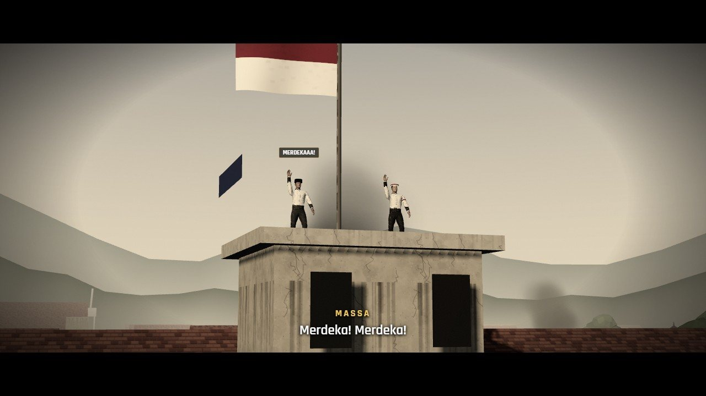

ADA DI DEMO
BAB 1
Arek-Arek Suroboyo
19 September – 10 November 1945 · Surabaya
Bendera Belanda berkibar di Hotel Yamato. Massa berkumpul, perundingan gagal, dan para pemuda merobek warna birunya. Lalu datang ultimatum Inggris, siaran Bung Tomo, dan gempuran 10 November.
- Tahan serbuan di alun-alun Hotel Yamato
- Evakuasi warga Kampung Peneleh
- Rebut Gedung Internatio
- Ledakkan & tahan Jembatan Merah